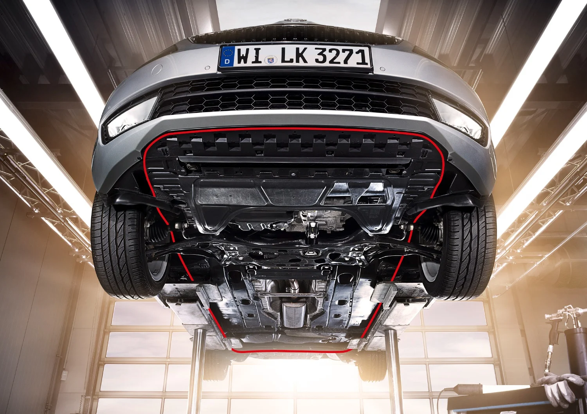

En Rekord Autoak, sabemos lo importante que es mantener un vehículo en buen estado para prolongar su
vida útil y mejorar así tanto la seguridad del vehículo como la de su conductor y
pasajeros. Por este motivo, hemos reunido una gran variedad de artículos, además de una serie de
vídeos de mecánica, informativos que os ayudarán a realizar pequeñas reparaciones y
sencillas tareas de manutención, además de enseñaros a identificar que puede provocar las averías y
que coste medio podría significar la reparación de las mismas en el taller.
Saber diagnosticar bien una avería es la clave
En mi opinión, la base fundamental de un buen mecánico en la actualidad es saber diagnosticar bien. Esto
va a hacer que ahorre muchísimo tiempo y que la solución sea la correcta.

Cómo debe ser un buen mecánico
Un buen mecánico tiene que ser un tipo muy completo. No vale con ser hábil con las manos (que también es
importante), hay que tener una mente analítica y una formación muy especializada.
Voy a enumerar las cualidades que deben definir a un buen mecánico y por qué:
-
Dominar el idioma: La diagnosis es fundamental para una correcta reparación, saber el idioma en el
que te vas a comunicar con el coche es prioritario.
-
Saber interrogar: Lo primero que debe hacer el mecánico es preguntar al cliente el motivo por el que
trae el coche al taller.
Es importante concretar cómo sucedió el fallo, si lo hace más con el motor frío o en caliente, al
acelerar a fondo o suavemente, al girar a un lado o a otro... Para hacer la pregunta correcta hay
que saber mucho de mecánica y de electrónica.
Nada más decirnos lo que le ha sucedido debemos tener una idea de por dónde pueden ir los tiros y
hacer las preguntas que acoten al máximo el problema.
-
No tener miedo a estudiar: Un mecánico en la actualidad tiene que estar dispuesto a invertir muchas
horas en formarse y estar al día de las tecnologías que vayan surgiendo.
La realidad es que los coches han alcanzado un nivel de complejidad tan grande, que para entenderlos
—y así poder repararlos— hay que tener unos conocimientos casi al nivel de los del ingeniero que los
desarrolló. Afortunadamente,
para facilitar la tarea, los ingenieros hacen manuales de taller para identificar los fallos, pero
un manual es como un mapa: si no sabes leerlo no sirve de nada.
-
Tener conocimientos de electrónica: Antiguamente, a un mecánico le bastaba con saber lo que era una
batería, una dinamo y un interruptor para dominar la mecánica y la electricidad de un coche. En la
actualidad es la electrónica la principal causa de averías en los coches y es prioritario dominarla.
Si no sabes utilizar un osciloscopio no tienes la menor oportunidad. Saber cómo comprobar un sensor
del ABS o un inyector empleando un osciloscopio es básico.
También es necesario tener conocimientos sobre redes multiplexadas y sistemas CAN-BUS. Incluso la
fibra óptica está siendo empleada con cierta frecuencia.
-
Hacerse especialista: A medida que los coches se están volviendo más complicados es más difícil
poder cubrir todos los campos necesarios para repararlos. Debemos ser conscientes de que los coches
son diseñados por equipos de ingenieros especializados.
Llegar a comprender cómo funciona todo el coche y saber repararlo todo es inabarcable.
-
Ser millonario: no es necesario si vas a trabajar en un taller de otro, pero si quieres abrir tu
propio negocio deberás tener dinero suficiente como para no tener que trabajar. La herramienta es
cara, y los modernos equipos de diagnosis lo son todavía más.